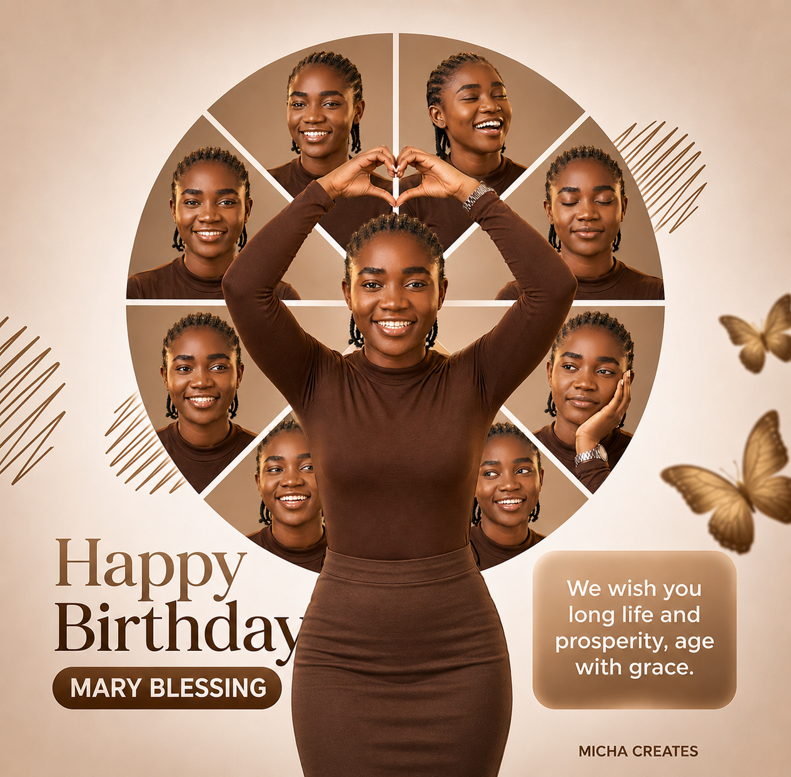
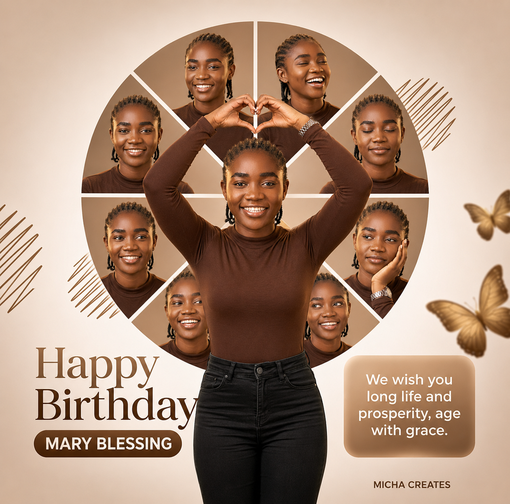

01
Clearer thinking
Simple prompts that turn a vague intention into a next action you can see.
A better rhythm starts here
Build a life that feels more intentional through practical habits, creative work, and small decisions you can keep making.
The daily difference
Discipline Daily brings together grounded ideas for focus, personal growth, and creative momentum. No perfect mornings required. Just a useful next step and the courage to repeat it.
Read our story01
Simple prompts that turn a vague intention into a next action you can see.
02
Flexible routines designed for real schedules, changing energy, and fresh starts.
03
A growing collection of visual work made with care, curiosity, and purpose.
Selected work
A glimpse at recent designs, images, and visual experiments from the studio.
Celebration

Celebration

Celebration

Identity
Your next chapter